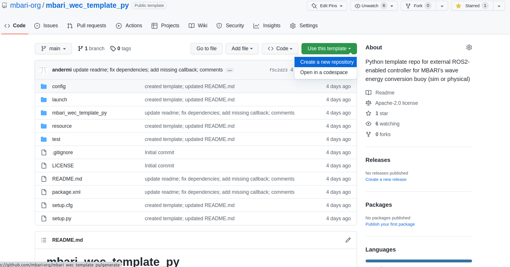

Quick Start — Writing External Controller With GitHub Template Repository¶
In this tutorial, you will make and customize a GitHub repository from a GitHub Template with
a ROS 2 Python package and code ready to implement your own external controller utilizing the
buoy_api_py interface. This interface may be used with the both the simulated and physical buoy.
Interfaces and Templates¶
There are two GitHub template repositories set up (C++/Python) for a quick start on writing a custom controller utilizing buoy_api_cpp and buoy_api_py. Please see C++ examples and Python examples for example controller implementations.
Using Python Template¶
Creating your own repo from the template¶
You may also refer to GitHub's template documentation
To start using the Python GitHub template
-
Navigate to mbari_wec_template_py and click the green button with the text
Use this templateand selectCreate a new repository
-
Next, set up the repository like you would any new GitHub repository choosing the owner, repository name, public/private, etc.
- Make a ROS 2 workspace
$ mkdir -p ~/controller_ws/src $ cd ~/controller_ws/src - Now that your new repository is set up, clone it to your local machine, make a branch, etc.
$ git clone https://github.com/<owner>/<repo_name>.git $ cd ~/controller_ws
You should now have a Python ROS 2 package with the following structure:
<repo_name>
├── config
│ └── controller.yaml
├── launch
│ └── controller.launch.py
├── LICENSE
├── mbari_wec_template_py
│ ├── controller.py
│ └── __init__.py
├── package.xml
├── README.md
├── resource
│ └── mbari_wec_template_py
├── setup.cfg
├── setup.py
└── test
├── test_copyright.py
├── test_flake8.py
└── test_pep257.py
Customizing the controller¶
You may also refer to the README.md in your newly cloned repository.
Modify template for your package¶
Replace mbari_wec_template_py with your package name and modify other fields as necessary in:
- package.xml (lines 4-8)
| package.xml | |
|---|---|
1 2 3 4 5 6 7 8 | |
- setup.py (lines 7, 11, 22-25, 29)
| setup.py | |
|---|---|
7 8 9 10 11 12 13 14 15 16 17 18 19 20 21 22 23 24 25 26 27 28 29 | |
- setup.cfg (lines 2, 4)
Update script_dir and install_scripts locations with your package name
| setup.cfg | |
|---|---|
1 2 3 4 | |
- launch/controller.launch.py (lines 22, 35-36)
| launch/controller.launch.py | |
|---|---|
22 23 24 25 26 27 28 29 30 31 32 33 34 35 36 | |
- config/controller.yaml (line 1)
Update first line with your controller name (same as node name in launch file)
| config/controller.yaml | |
|---|---|
1 2 3 | |
and rename two files/folders
- the empty file
resource/mbari_wec_template_py - the Python package
mbari_wec_template_pycontainingcontroller.py
resulting in the following folder structure:
repo_name
├── config
│ └── controller.yaml
├── launch
│ └── controller.launch.py
├── LICENSE
├── your_package_name
│ ├── controller.py
│ └── __init__.py
├── package.xml
├── README.md
├── resource
│ └── your_package_name
├── setup.cfg
├── setup.py
└── test
├── test_copyright.py
├── test_flake8.py
└── test_pep257.py
Modify setup.py as desired and add any dependencies in package.xml following standard ROS 2
documentation.
Implement Controller¶
Assuming you have followed the above and renamed the Python package mbari_wec_template_py to your package name,
<your_package_name>/controller.py is stubbed out to implement your custom external controller.
You may also use config/controller.yaml for any policy parameters.
ControlPolicy¶
You may use the class ControlPolicy in <your_package_name>/controller.py to implement your controller.
21 22 23 24 25 26 27 28 29 30 31 32 33 34 35 36 37 38 39 40 41 | |
- Set any configurable parameters in
__init__on line 23
23 24 25 26 27 | |
- Set any dependent variables in
update_paramson line 29
29 30 31 32 33 | |
- Declare/get/update params in the
set_paramsfunction of theControllerclass on line 118
118 119 120 121 122 123 124 125 | |
- Then, your control logic will go in the
targetfunction on line 36. Modify the input args as well as the return value as necessary
35 36 37 38 39 40 41 | |
Controller¶
The Controller class contains an instance of ControlPolicy as the member variable,
self.policy. The self.policy.target function may be called anywhere within the
Controller class. You may call it inside any of the data callbacks to enable feedback
control (for example):
# To subscribe to any topic, simply define the specific callback, e.g. power_callback
def power_callback(self, data):
'''Callback for '/power_data' topic from Power Controller'''
# get target value from control policy
target_value = self.policy.target(data.rpm, data.scale, data.retract)
# send a command, e.g. winding current
self.send_pc_wind_curr_command(target_value, blocking=False)
Or, set up a loop in main() and run open-loop:
128 129 130 131 132 133 134 135 136 137 138 | |
You may get feedback data from any of the buoy topics by simply creating a specific callback listed below. For feedback data you'd like to use in another area of the class, feel free to assign them to class variables.
(Delete any callbacks you don't need in the Controller class)
Available callback functions:
/ahrs_data → def ahrs_callback(self, data):
/battery_data → def battery_callback(self, data):
/spring_data → def spring_callback(self, data):
/power_data → def power_callback(self, data):
/trefoil_data → def trefoil_callback(self, data):
/powerbuoy_data → def powerbuoy_callback(self, data):
You may also send commands from within the Controller class:
self.send_pump_command(duration_mins, blocking=False)
self.send_valve_command(duration_sec, blocking=False)
self.send_pc_wind_curr_command(wind_curr_amps, blocking=False)
self.send_pc_bias_curr_command(bias_curr_amps, blocking=False)
self.send_pc_scale_command(scale_factor, blocking=False)
self.send_pc_retract_command(retract_factor, blocking=False)
In the Controller constructor, you may also uncomment lines 55 or 56 to set the publish rates for
the Spring or Power Controllers on the buoy. These controllers default to publishing at 10Hz. You
can call commands to set the rates anywhere from 10Hz to 50Hz (default argument is 50Hz).
46 47 48 49 50 51 52 53 54 55 56 | |
The Controller is also capable of synchronizing its clock from the sim /clock by uncommenting
line 61. Since the Controller inherits from rclpy.Node, you may use self.get_clock() and
other various time-related functions of rclpy.Node.
58 59 60 61 | |
Build, Test, Run¶
At this point, your new package should build, pass tests, and run against the sim (will connect but do nothing).
It is assumed that you have already installed or built the buoy packages.
From your workspace (e.g. ~/controller_ws) build your package:
$ colcon build
Starting >>> mbari_wec_template_py
--- stderr: mbari_wec_template_py
/usr/lib/python3/dist-packages/setuptools/command/install.py:34: SetuptoolsDeprecationWarning: setup.py install is deprecated. Use build and pip and other standards-based tools.
warnings.warn(
---
Finished <<< mbari_wec_template_py [0.74s]
Summary: 1 package finished [0.89s]
1 package had stderr output: mbari_wec_template_py
$ colcon build --packages-up-to <your_package_name>
Then, source and test:
$ source install/local_setup.bash
$ colcon test
Starting >>> mbari_wec_template_py
--- stderr: mbari_wec_template_py
=============================== warnings summary ===============================
test/test_flake8.py::test_flake8
test/test_flake8.py::test_flake8
Warning: SelectableGroups dict interface is deprecated. Use select.
-- Docs: https://docs.pytest.org/en/stable/warnings.html
---
Finished <<< mbari_wec_template_py [0.74s]
Summary: 1 package finished [0.87s]
1 package had stderr output: mbari_wec_template_py
$ colcon test --packages-select <your_package_name>
Next, in another terminal run the sim (after sourcing the sim packages of course):
$ ros2 launch buoy_gazebo mbari_wec.launch.py
Now, in the previous terminal, launch the empty controller:
$ ros2 launch <your_package_name> controller.launch.py
And you should see something similar to:
[INFO] [launch]: Default logging verbosity is set to INFO
[INFO] [controller-1]: process started with pid [1409887]
[controller-1] [INFO] [1678130539.867493131] [controller]: Subscribing to <class 'buoy_interfaces.msg._xb_record.XBRecord'> on '/ahrs_data'
[controller-1] [INFO] [1678130540.031500810] [controller]: Subscribing to <class 'buoy_interfaces.msg._bc_record.BCRecord'> on '/battery_data'
[controller-1] [INFO] [1678130540.031972332] [controller]: Subscribing to <class 'buoy_interfaces.msg._sc_record.SCRecord'> on '/spring_data'
[controller-1] [INFO] [1678130540.032390456] [controller]: Subscribing to <class 'buoy_interfaces.msg._pc_record.PCRecord'> on '/power_data'
[controller-1] [INFO] [1678130540.032810815] [controller]: Subscribing to <class 'buoy_interfaces.msg._tf_record.TFRecord'> on '/trefoil_data'
[controller-1] [INFO] [1678130540.033268687] [controller]: Subscribing to <class 'buoy_interfaces.msg._xb_record.XBRecord'> on '/xb_record'
[controller-1] [INFO] [1678130540.033703510] [controller]: Subscribing to <class 'buoy_interfaces.msg._bc_record.BCRecord'> on '/bc_record'
[controller-1] [INFO] [1678130540.034091374] [controller]: Subscribing to <class 'buoy_interfaces.msg._sc_record.SCRecord'> on '/sc_record'
[controller-1] [INFO] [1678130540.034467140] [controller]: Subscribing to <class 'buoy_interfaces.msg._pc_record.PCRecord'> on '/pc_record'
[controller-1] [INFO] [1678130540.034868686] [controller]: Subscribing to <class 'buoy_interfaces.msg._tf_record.TFRecord'> on '/tf_record'
[controller-1] [INFO] [1678130540.035298496] [controller]: Subscribing to <class 'buoy_interfaces.msg._pb_record.PBRecord'> on '/powerbuoy_data'
[controller-1] [INFO] [1678130540.286577653] [controller]: /pc_pack_rate_command not available
[controller-1] [INFO] [1678130540.537643441] [controller]: /sc_pack_rate_command not available
[controller-1] [INFO] [1678130540.538230613] [controller]: Found all required services.
Example¶
An example using this interface will follow in the next tutorial: Linear Damper Example (Python)